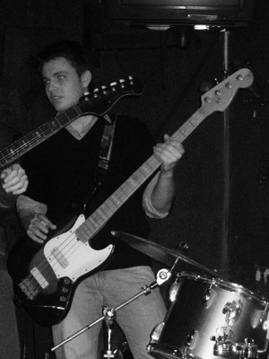
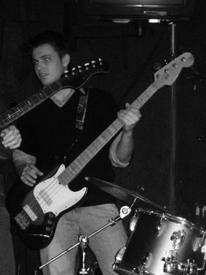

Biografija
Ilga kaip Vidas (nori)
I dalis. Nuo tada, kai Vidas metė Laurą, iki Tautvydo atėjimo KAD pagroti. (apie metai laiko)
Kaip viskas buvo iÅ tikrųjų.
Toks Vidas ir toks ļæ½ilvinas buvo ilgamečiai lengvos muzikos ansamblio "Gaidelis" nariai. Po naujų 2006 metų Vidas iÅsiskyrė su ļæ½mona, todėl daugiau laiko pradėjo leisti su tokiu ļæ½ilvinu. ļæ½i delegacija sausio mėnesį nukeliavo į Artūro Baryso mirties metinių paminėjimą ir nusprendė būti ļæ½izovais menininkais. Grįļæ½ęs namo ļæ½ilvinas pabandė atsirinkti "ļæ½unparkio" akordus ir, susisiekęs su Vidmantu pasakė, kad reikia grot Gaideliui ļæ½unparkį, nes čia jė daina. Čia buvo jau 2006 metai ir ļæ½ilvinas vartojo tokį ļæ½odį "Galingai!". Jis pasakė Vidui, kad bus galia! Vidas pasakė, kad "Arklio Galia".
ļæ½ilvinas pamaļæ½u iļæ½moko naudotis sintezatoriaus autoakomponimentu ir su tokiu Meinardu dainavo dainą "Atsisveikinimo daina". Gal mes jam ļæ½iek tiek atleisim, bet Meinardas buvo kiek vulgarokas ir dainavo "Kankalai, kankalai". Vidas dainavo kaļæ½ką apie atsisveikinimą. Kitą dieną nusprendėm nufilmuoti ļæ½itą pasirodymą ir turėti. Meinardas neatėjo ir nusprendėm plačiai auditoriai pateikti cenzūruotą versiją, todėl tai tiesiog buvo atsisveikinimo daina, kurioje grupė "Arklio Galia" visiems laikams atsisveikino su klausytojais. Tą pačią dieną įraļæ½ėm skandalingą dainą "Man patinka tas čiūvas" apie roudbendų klaviļæ½inką Darių.
Nenugalimos rusiļæ½kos akustinės gitaros kėlė nerimą ir kėlė iÅ miego kaimynus. ļæ½ilvinas uļæ½sidirbo ļæ½iek tiek pinigų ir nusprendė būt koks Chendriksas, todėl 2006.04.01 uļæ½ 200 litų nusipirko elektrinę gitarą "Musima Eterna Deluxe 25". Jo pavydļæ½iam nusivylimui Vidas po maļæ½iau kaip savaitės įsigijo iÅ Jovaro Yamaha elektrik gitar. Įraļæ½ėm dainas "Nesidļæ½iauk nebaigęs gyvenimo", "Pavydas", "Iļæ½keliausim į pasaulį". Pirmųjų gitarinių Arklio Galios dainų tekstai buvo su patarlių ļæ½odyno įsikiļæ½imu. Vidas perskaitydavo patarlę, o paskui bandydavo ją prisiminti. "Meilė be pavydo tai kaip maistas be druskos" pavirto į "Pavydas - tai meilė be druskos".
Paskui Ainis nusipirko iÅ tokio Emilio bosą "Ural" ir pradėjom repetuoti rūsy ant taurakalnio su būgnais. Prie pastarųjų sedėjo toks Eimantas. Perspektyvus ļæ½ilvino kaimynas. Pagrojom po poros mėnesių koncertą Kaune.
Eimantas turėjo kitą grupę "RElouad", todėl po kiek laiko iÅėjo iÅ mūsų grupės. Groti būgnais atėjo Vido pusbrolis Domas. Jis buvo smarkiai jaunesnis uļæ½ visus kitus, todėl pradļæ½ioj buvo sunku su juo bendrauti. Pirmąją dieną su nauju bumbačium į mūsų repeticijų padvalą atsivilko girtas Skylės bumbačius "SKIRMA", kuris mum paaiļæ½kino, kad bliuzas ne jaunimui, o reikia grot indiroką. Repetavom visą vasarą, bet su Domu apturėjom tik vieną rokļæ½au Jonavoj. Vietoj jo pas mus atgrįļæ½o toks Eimantas Burakas. Dar vieną koncertą pagrojom su Ainiu ļæ½v.Kristoforo mokykloj, kur mus pastebėjo muzikos specialistas Tautvydas, kuris tada buvo su kostiumu ir ilgais plaukais. Sakė "Man patinka". Nuo tada Tautvydas buvo visuose mūsų koncertuose iki ļæ½iol.
Paskui vietoj Ainio į mūsų grupę atėjo moterų numylėtinis Simas maļæ½inistas. Su juo pelnėm pasaulinę ļæ½lovė pagrodami Psichbaryje! Su Simu pagrojom keliuose koncertuose ir jis pasakė "Reikia pailsėt", todėl nuėjom pas Kouplendą daryt trijų įraļæ½ų tryse. Įraļæ½ėm tris įraļæ½us, kuriuose ļæ½ilvinas grojo ir bosu ir gitara, nes bosisto nebuvo. Pagrojęs su Kouplendo IRIS bosu ļæ½ilvinas pamanė, kad tai - puikus instrumentas ir pasisiūlė Vidui groti bosu vietoj gitaros, o gitaristu paimti Tautvydą, didļæ½iausią Arklio faną. Vidas paklausė: "Bet tu su pirļæ½tais grosi, o ne su mediatorium?".]
ļæ½ilvinas paraļæ½ė Tautvydui laiļæ½ką, o Tautvydas pasakė, kad mirė Dļæ½eimsas Braunas.
II dalis. Nuo tada kai pagrojom pirmą koncertą iki tada kai sutikom Mildą. (lygiai metai laiko)
Iļæ½ kairės:
Žilvinas Jagėla (bosinė gitara)
Vidmantas Aškinis (vokalas, gitara, lūpinė armonikėlė)
Eimantas Burakas (mušamieji)
Tautvydas Augustinas (gitara, vokalas, klaviļæ½iniai, perkusija)
Milda ļæ½emaitytė (atstovė kultūrai)
Buvę nariai:
 
 
Ainis Karpavičius (bosinė gitara) Simas Valiukevičius (bosinė gitara) Dominykas Niaura (muļæ½amieji)
Arklio Galios nariai daugiau ar maļæ½iau ar truputį buvo ar bus prikiļæ½ę nagus prie aibės tokių dalykų kaip "Belgija ļæ½aklinos Aky", "Reload", "LMA Gaidelis", "Sunshop", "Senasis Potvynis", "Candles Made Of Chocolate", "Čia gimę", "Gediminas Sudnikavičius", "Flu Folders", "Fallen men", "Rain Forest Puppets", "Talanda", "Kiauras Kibiras" ir "Baltasis Kiras", bet čia paslaptis.